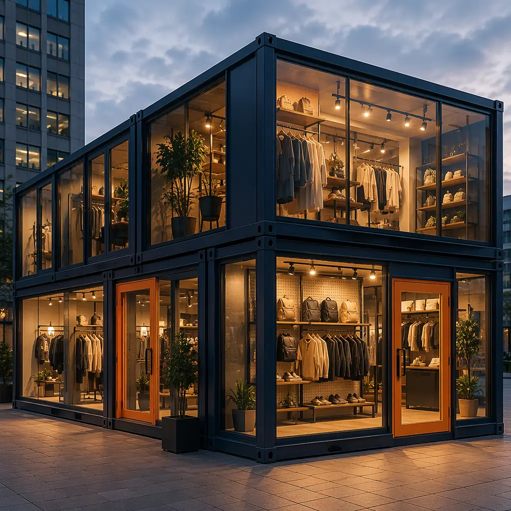
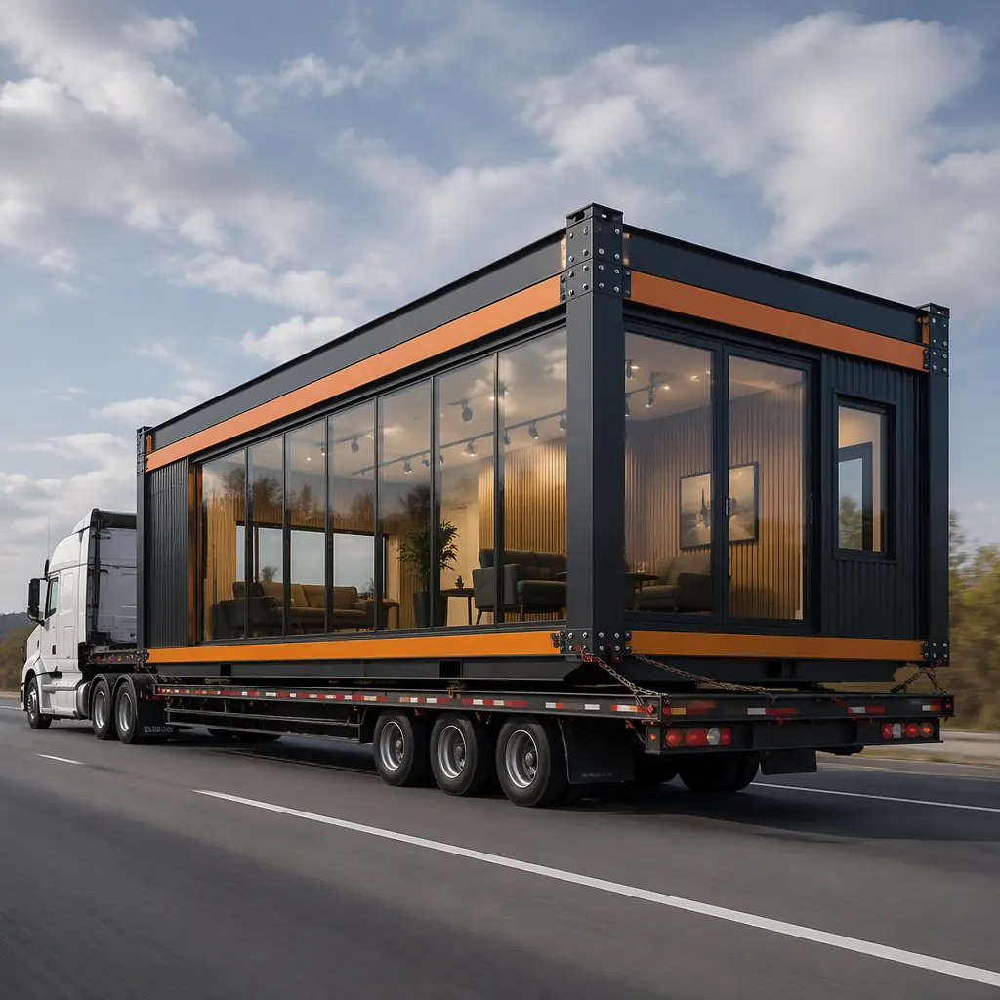
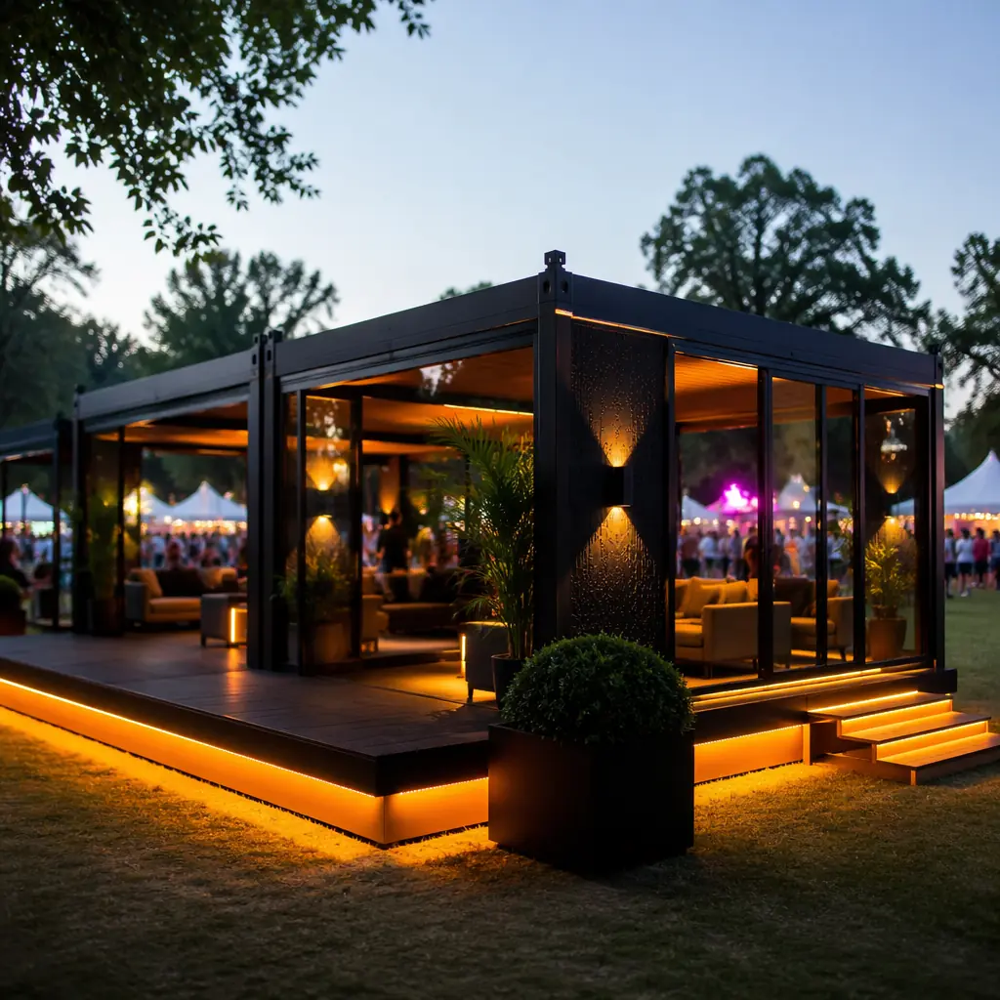
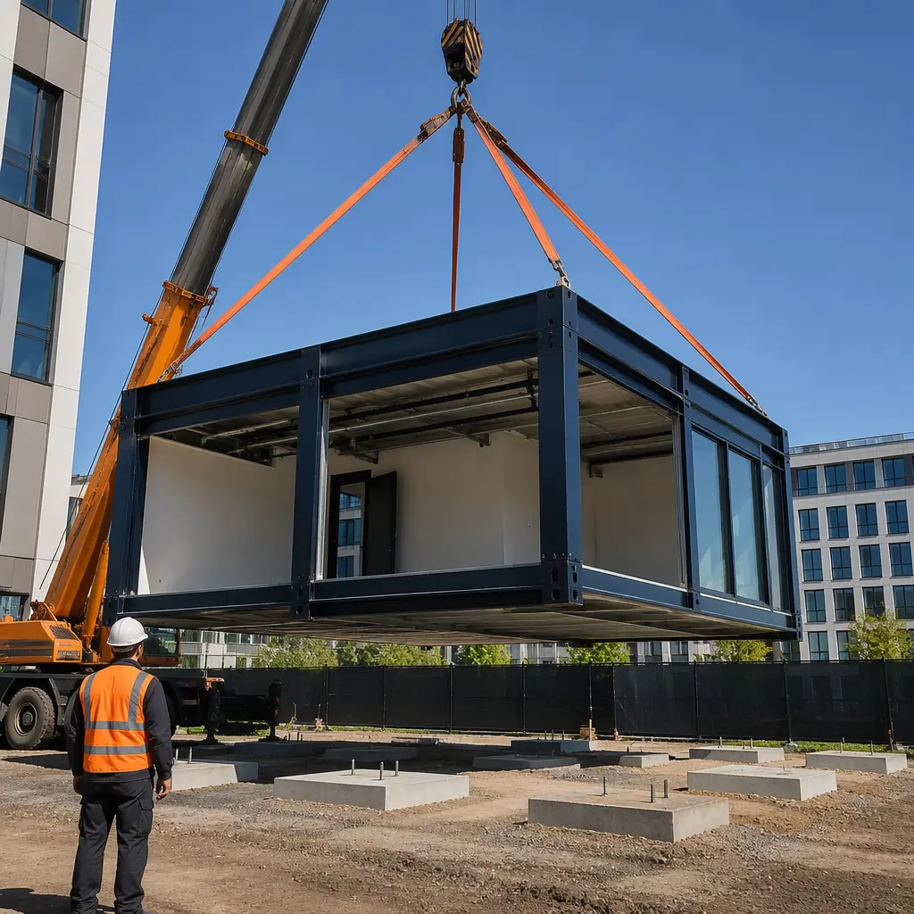
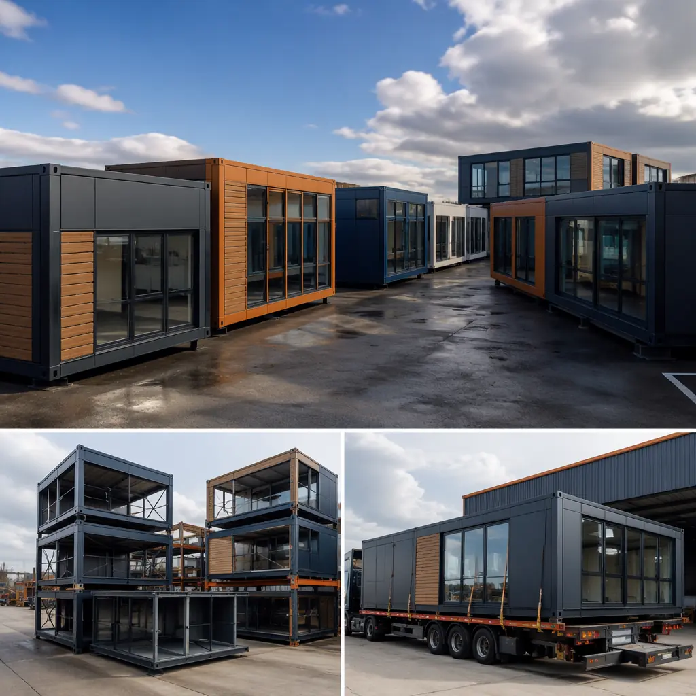

Not every building is meant to stay where it was first placed. A luxury brand opening a six-month pop-up store in a shopping district, a festival organizer deploying ticket booths and VIP lounges for a three-week event, a construction consortium needing a project office that moves between phases — these use cases share a requirement that permanent construction cannot satisfy: the building must be deployable in weeks and relocatable in days without demolition. Modular construction, designed from its origin to be transported and assembled, is the only building method that treats relocation as a designed feature rather than an afterthought.

When Temporary Does Not Mean Low-Quality
The term "temporary building" carries a stigma inherited from construction trailers and portable classrooms — low ceilings, fluorescent lighting, thin walls, and zero architectural ambition. Purpose-built modular temporary facilities share none of these characteristics. A MODURA temporary commercial module uses the same steel frame, the same insulated wall panels, the same commercial-grade MEP systems, and the same architectural finish options as a permanent modular building. The difference is not in quality; it is in the connection details, foundation interface, and MEP disconnection points that enable relocation.
The five design features that distinguish a relocatable modular facility from a permanent one are invisible to occupants but critical to the business case:
- Bolted Module-to-Module Connections. Permanent modular buildings typically weld module connection plates after setting, creating a monolithic structure that requires cutting to separate. Relocatable facilities use high-strength bolted connections with access panels at every module joint, allowing disassembly crews to separate modules without structural damage. The bolted connections are designed to the same seismic and wind-load standards as welded connections — the engineering is identical, only the fastener type changes. MODURA's bolted connection system has been tested through 12 disassembly/reassembly cycles without measurable degradation in connection capacity.
- Disconnectable MEP Interfaces. Instead of hard-piped plumbing and conduit runs between modules, relocatable facilities use quick-connect flexible couplings at module joints. Water supply lines use braided stainless steel hoses with quarter-turn isolation valves at each module. Electrical feeders use pin-and-sleeve connectors rated for the module's load. HVAC ducts use fabric connectors with compression bands. Each utility can be disconnected at the module boundary in under 10 minutes per connection point. The upfront cost premium for disconnectable MEP is approximately $3–$5 per square foot — paid back in the first relocation through avoided demolition and reconstruction of MEP systems.
- Adjustable Foundation Interfaces. Permanent modular buildings are set on cast-in-place concrete foundation walls with embedded anchor bolts. Relocatable modules sit on adjustable steel pedestals or screw-pile foundations that can be leveled on uneven ground, removed when the building relocates, and reinstalled at the next site. The foundation cost for a relocatable facility is typically 40–60% lower than a permanent modular foundation because no cast-in-place concrete walls are required. This cost is partially offset by the pedestal system's higher material cost, but the net foundation savings range from $8–$15 per square foot.
- Lifting and Transportation Design. Every relocatable module is designed with lifting points that remain accessible after finishing — typically integrated into the module corner posts with removable cover plates. Permanent modules often conceal lifting points behind exterior cladding because they are never intended to be lifted again. Relocatable modules also include fork pockets in the floor frame for short-distance repositioning without a crane and tie-down points for flatbed transport. These features add approximately $1,200–$1,800 per module in steel fabrication cost.
- Module-Level Utility Metering. When a temporary facility is deployed on a site with existing utility infrastructure, the building owner needs to isolate utility consumption for billing purposes. Each module in a relocatable facility includes its own electrical sub-panel and water isolation valve, enabling per-module metering if required. This also simplifies relocation: each module's utilities can be disconnected independently without affecting adjacent modules that may remain operational.

Pop-Up Retail — The Highest-Value Temporary Application
Pop-up retail is the most commercially compelling use case for relocatable modular construction because the revenue generated during the short deployment period must justify the entire building cost. A luxury fashion brand opening a 2,000 sq ft pop-up for a six-month holiday season generates approximately $600,000–$1.2 million in revenue during that period (at $600–$1,200/sq ft annual retail productivity for luxury brands, pro-rated for 6 months). A traditional site-built pop-up costing $400–$600 per square foot ($800k–$1.2M for 2,000 sq ft) barely breaks even. A modular pop-up costing $280–$380 per square foot ($560k–$760k) delivers a 30–60% return on the deployment, and the modules can be reused for the next seasonal activation.
MODURA's pop-up retail system accommodates the brand expression that luxury retailers require while maintaining the relocatability that makes the business case work:
| Retail Requirement | Traditional Pop-Up | Modular Pop-Up |
|---|---|---|
| Glass storefront | Site-built aluminum curtain wall, 4–6 weeks, non-reusable | Factory-glazed module face, shipped with protective film, reusable |
| Interior finishes | Custom millwork built on-site, demolished after deployment | Factory-installed display walls, lighting, flooring; removed and stored |
| HVAC for retail occupancy | Temporary packaged units, noisy, inefficient | Factory-installed split systems, quiet, relocated with module |
| Branding integration | Applied on-site after construction, weather dependent | Factory-applied or pre-engineered attachment points for rapid install |
| Deployment timeline | 10–16 weeks | 4–8 weeks (modules pre-built in factory) |
| Relocation cost (as % of original) | 100% (demolish and rebuild) | 15–25% (transport, reassemble, reconnect) |
The pop-up retail model is particularly effective in markets where prime retail locations have long vacancy periods between permanent tenants. A landlord with a vacant 3,000 sq ft retail bay that will take 12 months to lease to a permanent tenant can generate $45,000–$75,000 in rent from a 6-month modular pop-up during the vacancy period. This is revenue that the landlord would otherwise forfeit, and the pop-up tenant gets a prime location that would be unavailable for a permanent lease. For brands seeking flexible retail strategies, this aligns with the approach described in our modular retail construction guide.

Event Pavilions — Rapid Deployment for Festivals and Sporting Events
Event organizers face a recurring infrastructure challenge: they need high-quality hospitality, media, and operational spaces that can be deployed in 2–4 weeks, operated for 1–4 weeks, and removed in 1 week — all without damaging the site. Tents and trailers are the default solution, but they cannot provide the climate control, acoustic isolation, or brand-appropriate aesthetic that sponsors and VIP guests expect. Modular event pavilions bridge this gap.
A modular event pavilion system consists of modules pre-configured for specific event functions:
- Hospitality Suites. Modules fitted as private lounges with catering kitchens, restrooms, climate control, and AV systems. Deployed as 2–6 module clusters around a central deck. These replace the traditional "tent with portable AC and rented furniture" model at a comparable cost but with dramatically better guest experience.
- Media Centers. Modules configured as broadcast booths, press rooms, and production offices with integrated cable management, sound isolation between booths, and dedicated HVAC for equipment cooling. A 4-module media center supports 8–12 broadcast positions and can be deployed in 5 days.
- Medical and Operations Facilities. Climate-controlled first-aid stations, security command centers, and event operations rooms that must function reliably regardless of outdoor conditions. Unlike tents, modular event facilities maintain interior temperatures within 2°C of setpoint even at 40°C ambient, which is a regulatory requirement for medical facilities at events.
- Pop-Up Retail and Concessions. Branded merchandise stores, food and beverage outlets, and sponsor activation spaces that require point-of-sale systems, refrigeration, and grease exhaust — all of which can be factory-installed in the module rather than jury-rigged on-site.
The deployment sequence for a modular event pavilion is engineered for speed: modules arrive on flatbed trucks pre-finished and pre-tested, are lifted directly from the truck onto prepared pads by a mobile crane, and are connected and commissioned within 48–72 hours for a 6-module pavilion. Disassembly reverses the sequence in 24–36 hours. This operational tempo is possible because the modules are never "under construction" on-site — they arrive complete, and the site work consists solely of setting, connecting, and testing. This accelerated deployment model is similar in principle to modular emergency housing, though the finish level and amenities are commercial-grade.
A tent says "temporary compromise." A modular pavilion says "we built this specifically for you, and we'll take it down when you're done." For brands spending millions on event sponsorship, that distinction is worth the 20–30% premium over tent-based solutions.

Seasonal and Phased Commercial Operations
Beyond pop-up retail and events, relocatable modular facilities serve a range of commercial applications where the building's value is tied to a specific season, project phase, or market window:
Seasonal Hospitality. Ski resorts, beach clubs, and seasonal restaurants operate 4–6 months per year. A modular restaurant or rental shop that can be deployed in November, operated through March, and stored for the summer eliminates the carrying cost of a permanent building that sits empty for half the year. The relocatable module can also be moved to a different resort in a different hemisphere for the opposite season, effectively doubling its annual revenue-generating period. For permanent hospitality, see our modular restaurant construction and modular resort construction guides.
Construction Project Offices. For a deeper look, our modular winery & craft beverage productio… guide covers the details. Large infrastructure projects (dams, highways, energy facilities) require on-site offices, meeting rooms, and worker amenities that follow the project as it moves through phases. A modular office compound of 8–12 modules can be relocated between phases in 2–3 weeks, compared to 2–3 months to dismantle and rebuild a site-built office. Over a 5-year project with 3 relocations, the modular approach saves 6–9 months of downtime and approximately $400,000–$600,000 in relocation costs compared to site-built offices.
Market Testing and Pilot Locations. Retailers and restaurant chains testing a new market can deploy a modular pilot location for 12–18 months at a fraction of the permanent build cost. If the market performs, the modules can be replaced with a permanent build or expanded with additional modules. If not, the modules are relocated to the next test market. The capital at risk is 40–60% lower than a permanent build, and the modules retain residual value for the next deployment — a permanent build that underperforms is a sunk cost. This parallels the strategy that modular franchise rollout enables for multi-location brands.

At MODURA, our relocatable facilities program includes design, fabrication, deployment, and relocation management as an integrated service. We maintain a fleet of pre-configured modules for rapid deployment and can custom-build relocatable facilities to client specifications with delivery in 8–12 weeks from design approval. Contact our commercial team to discuss your temporary or relocatable facility requirements.